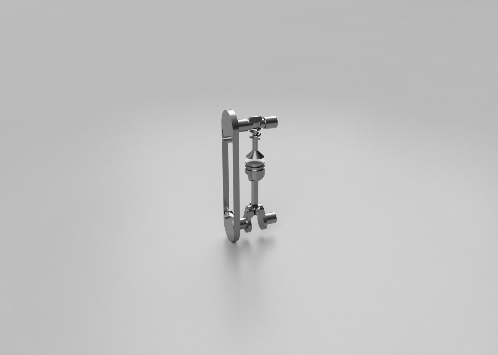
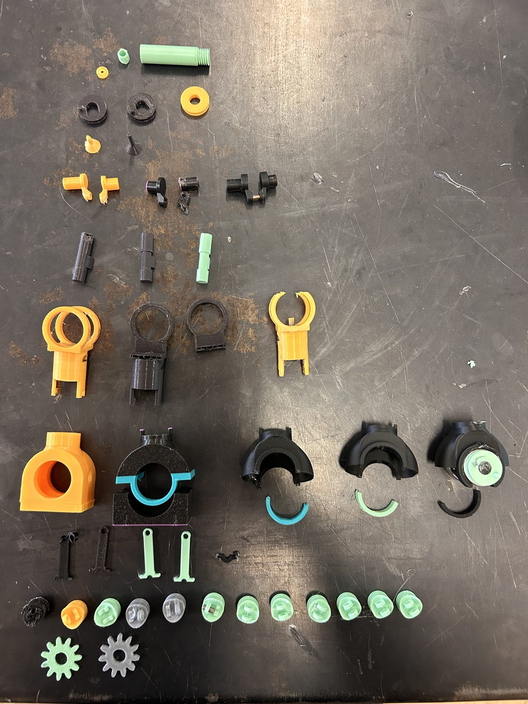
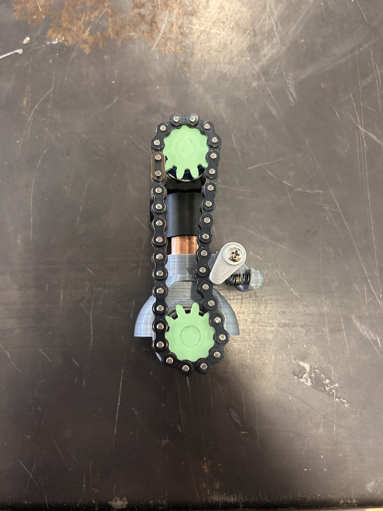
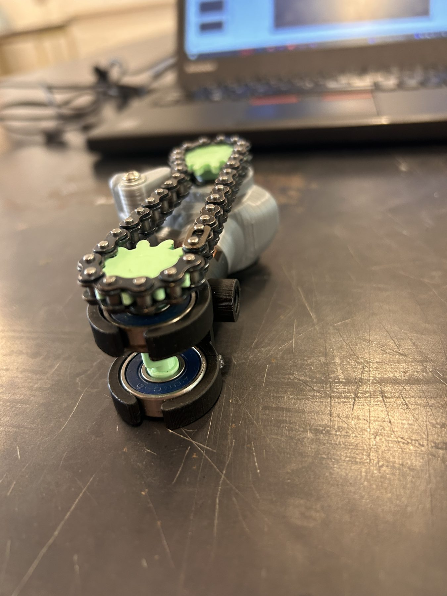

Pneumatic Engine

In partial fulfillment of an Engineering 12 high school class, I conceived, designed, and constructed a pneumatic engine. The design challenge involved overcoming tight tolerances and 3D printing complex geometries.
Kinematics
Successfully engineered the piston-crank geometry and valve timing, achieving linear-to-rotary motion transfer.
Synchronization
Connecting the engine's top and bottom ends using elastic bands failed, as they lacked the grip needed to overcome the system's internal friction. Replaced with a gear-and-tensioner system, successfully synchronizing the components while eliminating slippage.
Iterative Process
Achieving the tolerances and clearances needed to test the engine required a series of design iterations. Incorporating copper cylinder walls and crankshaft bearings further reduced internal friction.
Gallery



